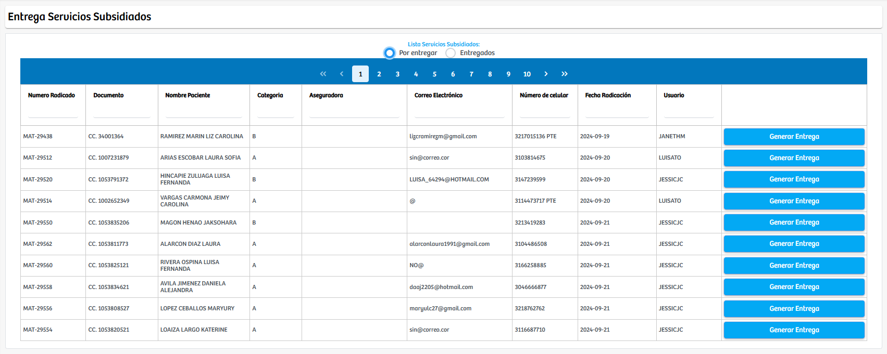
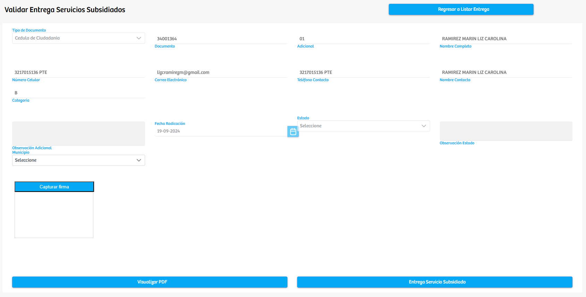

Modulos Sas-Web
Funcionalidades
Entrega Servicios Subsidiados
El módulo Entrega Servicios Subsidiados permite gestionar el proceso que se adelanta luego de la facturación de un servicio subsidiado, administrando tanto los registros que están pendientes por entrega como aquellos que ya han sido entregados al usuario. El sistema organiza la información en dos apartados principales: Por entregar y Entregados, cada uno enfocado en una etapa específica del proceso operativo.
En la sección Por entregar se muestran todos los servicios que ya fueron facturados y que están a la espera de ser entregados al beneficiario. La vista presenta los datos básicos del usuario y de la radicación, así como un botón denominado Generar Entrega, mediante el cual se inicia el proceso de validación. Al seleccionar esta opción, el sistema dirige a una nueva vista donde se exponen los datos personales del paciente y los campos necesarios para oficializar la entrega. En esta pantalla se puede registrar información de contacto, confirmar el estado de la radicación, seleccionar el municipio correspondiente, ingresar observaciones, capturar la firma del beneficiario y generar los documentos asociados. La entrega del servicio se formaliza mediante la opción Entrega Servicio Subsidiado, y se cuenta además con una herramienta para visualizar el soporte en formato PDF antes de confirmar la operación.
Por su parte, la sección Entregados consolida todos los servicios que ya fueron entregados al usuario. Esta vista permite consultar el historial de entregas realizadas y ofrece un botón para descargar el documento de compromiso generado en cada proceso. De esta manera se garantiza la trazabilidad completa del proceso de entrega y se facilita el acceso a los soportes que respaldan cada transacción.
